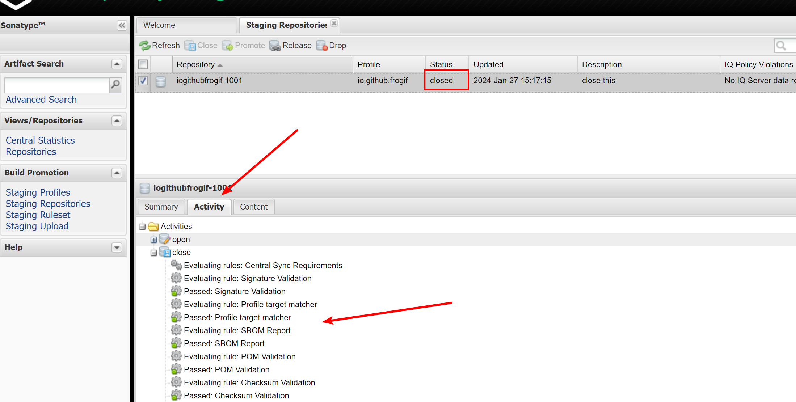

- Group Id: 这个很重要, 可能导致审批不通过的. 如果有域名, 就填域名, 否则可以填源码仓库地址等. 类似: io.github.frogif, 如果由于这里导致审核不通过, 要仔细读他的评论, 按照说的步骤做就可以了.

<!-- 省略 -->
<servers>
<server>
<id>ossrh</id>
<username>issues.sonatype.org账号</username>
<password>issues.sonatype.org密码</password>
</server>
</servers>
<!-- 省略 -->
<profiles>
<profile>
<id>ossrh</id>
<activation>
<activeByDefault>true</activeByDefault>
</activation>
<properties>
<gpg.executable>gpg</gpg.executable>
<gpg.passphrase>生成密钥时输入的密码</gpg.passphrase>
<gpg.homedir>C:\Users\xxxx\AppData\Roaming\gnupg</gpg.homedir>
</properties>
</profile>
</profiles>
<!-- 省略 -->
gpg.homedir参数可以从命令行获取:
<?xml version="1.0" encoding="UTF-8"?>
<project xmlns="http://maven.apache.org/POM/4.0.0"
xmlns:xsi="http://www.w3.org/2001/XMLSchema-instance"
xsi:schemaLocation="http://maven.apache.org/POM/4.0.0 http://maven.apache.org/xsd/maven-4.0.0.xsd">
<modelVersion>4.0.0</modelVersion>
<groupId>io.github.frogif</groupId>
<name>calculator-number</name>
<artifactId>calculator-number</artifactId>
<version>1.0</version>
<packaging>jar</packaging>
<description>support general calculate for rational number and integer number, and precision lossless.</description>
<properties>
<maven.compiler.source>8</maven.compiler.source>
<maven.compiler.target>8</maven.compiler.target>
<project.build.sourceEncoding>UTF-8</project.build.sourceEncoding>
</properties>
<licenses>
<license>
<name>MIT License</name>
<url>https://www.opensource.org/licenses/mit-license.php</url>
<distribution>repo</distribution>
</license>
</licenses>
<url>https://github.com/FrogIf/Calculator</url>
<developers>
<developer>
<id>frogif</id>
<name>frogif</name>
<email>skyfrog@163.com</email>
<roles>
<role>Maintainer</role>
</roles>
<timezone>+8</timezone>
</developer>
</developers>
<scm>
<connection>https://github.com/FrogIf/Calculator.git</connection>
<developerConnection>scm:git:ssh://git@github.com:FrogIf/Calculator.git</developerConnection>
<url>https://github.com/FrogIf/Calculator/tree/master</url>
</scm>
<build>
<plugins>
<!-- 生成源码jar -->
<plugin>
<groupId>org.apache.maven.plugins</groupId>
<artifactId>maven-source-plugin</artifactId>
<version>2.2.1</version>
<executions>
<execution>
<id>attach-sources</id>
<goals>
<goal>jar-no-fork</goal>
</goals>
</execution>
</executions>
</plugin>
<!-- 生成文档jar -->
<plugin>
<groupId>org.apache.maven.plugins</groupId>
<artifactId>maven-javadoc-plugin</artifactId>
<version>2.10.4</version>
<configuration>
<additionalJOptions>
<additionalJOption>-Xdoclint:none</additionalJOption>
</additionalJOptions>
</configuration>
<executions>
<execution>
<id>attach-javadocs</id>
<goals>
<goal>jar</goal>
</goals>
</execution>
</executions>
</plugin>
<!-- gpg加密上传 -->
<plugin>
<groupId>org.apache.maven.plugins</groupId>
<artifactId>maven-gpg-plugin</artifactId>
<version>1.6</version>
<executions>
<execution>
<id>sign-artifacts</id>
<phase>verify</phase>
<goals>
<goal>sign</goal>
</goals>
</execution>
</executions>
</plugin>
</plugins>
</build>
<distributionManagement>
<snapshotRepository>
<!-- id需要与maven的settings.xml中保持一致 -->
<id>ossrh</id>
<url>https://s01.oss.sonatype.org/content/repositories/snapshots</url>
</snapshotRepository>
<repository>
<!-- id需要与maven的settings.xml中保持一致 -->
<id>ossrh</id>
<url>https://s01.oss.sonatype.org/service/local/staging/deploy/maven2/</url>
</repository>
</distributionManagement>
</project>
以上的步骤, 只需第一次推送这个项目的时候进行, 之后更新版本时, 都直接从下面开始(首先需要把Kleopatra软件打开)
mvn clean compile package deploy
打包时可能遇到各种问题, 例如上面配置了文档的生成, 这个只能用java8才可以. 另外, 构建前别忘记版本号的修改
访问https://s01.oss.sonatype.org, 进行后续操作
更改状态, 会有弹窗, 信息随意填写
如果列表里什么也没有, 可以点击刷新
